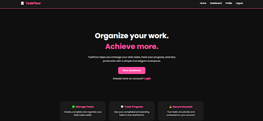
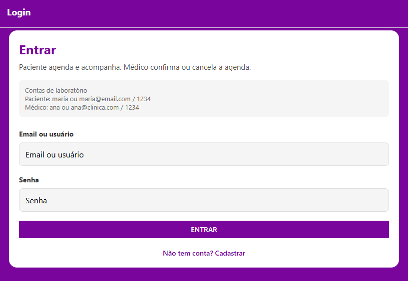
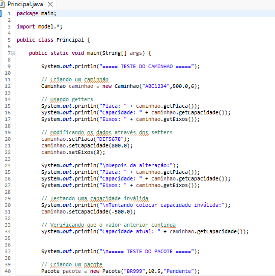
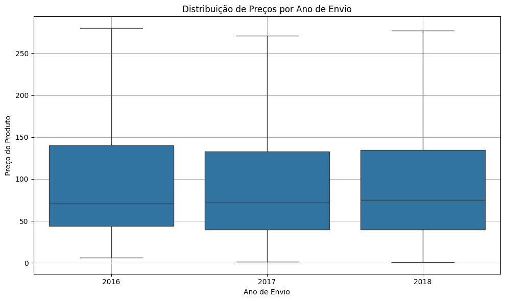
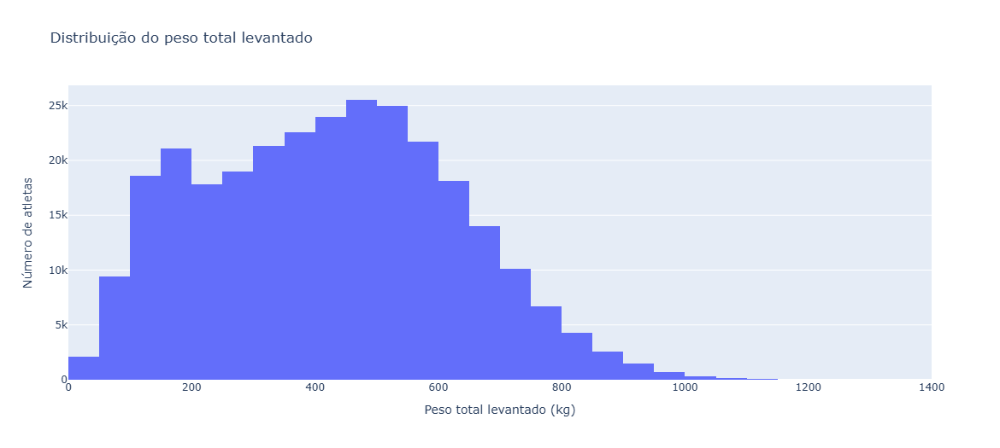
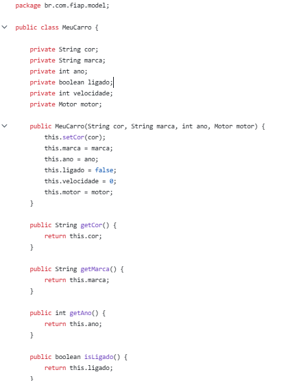

ESTUDANTE DE CIÊNCIA DA COMPUTAÇÃO
Transformando ideias em software.
Olá, eu sou Hanin Atwi.
Estudante de Ciência da Computação na FIAP, com experiência acadêmica internacional na Lebanese American University. Tenho interesse em desenvolvimento de software, aplicações web e mobile e análise de dados.
sobre-mim.js
const hanin = {
curso: "Ciência da Computação",
faculdade: "FIAP",
foco: [
"Desenvolvimento Web",
"Mobile",
"Data Analysis"
],
linguagens: [
"Python",
"Java",
"TypeScript"
],
objetivo: "Estágio em Tecnologia"
};
Aprendendo e construindo
01 / SOBRE
Um pouco sobre mim.
Sou estudante de Ciência da Computação na FIAP, em São Paulo, e tive uma experiência acadêmica internacional na Lebanese American University (LAU), no Líbano, onde estudei com uma bolsa de estudos de 50%.
Durante minha formação, venho desenvolvendo projetos para praticar programação, orientação a objetos, desenvolvimento web e mobile, bancos de dados e análise de dados.
Busco uma oportunidade de estágio em tecnologia para aplicar o que aprendi, colaborar com uma equipe e continuar desenvolvendo minhas habilidades técnicas.
FORMAÇÃO ATUAL
Ciência da Computação
FIAP · São Paulo, Brasil
EXPERIÊNCIA ACADÊMICA
Brasil + Líbano
FIAP e Lebanese American University
OBJETIVO
Estágio em Tecnologia
Desenvolvimento de software e áreas relacionadas
02 / HABILIDADES
Tecnologias que utilizo.
Tecnologias e conceitos estudados e praticados nos meus projetos.
Desenvolvimento Web
Desenvolvimento Mobile
Bancos de dados
Análise de dados
Ferramentas e conceitos
03 / PROJETOS
Trabalhos em destaque.
Projetos pessoais e acadêmicos que representam diferentes áreas da minha formação.

01 / APLICAÇÃO WEB TaskFlow. Visualização do projeto ↗TaskFlow
Projeto pessoalAplicação web de gerenciamento de tarefas desenvolvida com Flask e SQLite. Inclui autenticação, criação e gerenciamento de tarefas, prioridades, categorias, prazos e filtros.
Ver código no GitHub ↗
02 / DESENVOLVIMENTO MOBILE Consultas Médicas. Visualização do projeto ↗
03 / JAVA POO & Clean Code. Visualização do projeto ↗Checkpoint 2 — POO
AcadêmicoProjeto em Java focado na análise e refatoração de código legado, aplicando conceitos de orientação a objetos, encapsulamento e Clean Code.
Ver código no GitHub ↗
04 / ANÁLISE DE DADOS Olist. Visualização do projeto ↗Olist — Data Analysis
AcadêmicoProjeto acadêmico de análise de dados da Olist, envolvendo exploração e tratamento de dados para investigar padrões e extrair informações relevantes.
Ver código no GitHub ↗
05 / VISUALIZAÇÃO DE DADOS OpenPowerlifting. Visualização do projeto ↗OpenPowerlifting
AcadêmicoProjeto de visualização e análise de dados de competições de powerlifting, utilizando tratamento de dados e gráficos para explorar relações entre variáveis.
Ver código no GitHub ↗
06 / PROGRAMAÇÃO Java & POO. Visualização do projeto ↗Java — POO
AcadêmicoExercícios de Programação Orientada a Objetos em Java, praticando classes, métodos, construtores, encapsulamento e regras de negócio.
Ver código no GitHub ↗Veja também os exercícios e outros projetos da minha formação.
Todos os repositórios no GitHub ↗04 / FORMAÇÃO
Minha trajetória acadêmica.
2025 — PREVISÃO DE CONCLUSÃO EM 2029
Ciência da Computação
FIAP · São Paulo, Brasil
Formação em computação com projetos acadêmicos nas áreas de programação, desenvolvimento de aplicações, orientação a objetos, bancos de dados e análise de dados.
2024 — 2025
Computer Science
Lebanese American University (LAU) · Líbano
Experiência acadêmica internacional com bolsa de estudos de 50%. Disciplinas incluíram Java, Python, Cálculo e Matemática Discreta.
05 / CERTIFICADOS
Aprendizado contínuo.
Web
FIAP
Customer Experience Management
FIAP
Engenharia de Software
FIAP
Banco de Dados Oracle
FIAP
Formação Social e Sustentabilidade
FIAP
Adicione os links ou imagens dos certificados quando quiser disponibilizá-los para consulta.
06 / IDIOMAS
Idiomas que falo.
ÁrabeC2 · Proficiente
InglêsC2 · Proficiente
PortuguêsC1 · Avançado
EspanholA1 · Básico
07 / CONTATO
Vamos conversar?
Estou buscando oportunidades de estágio em tecnologia e desenvolvimento de software. Entre em contato para conversarmos.